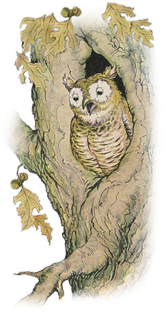

The Owl & the Grasshopper

The Owl always takes her sleep during the day. Then after sundown,
when the rosy light fades from the sky and the shadows rise slowly through the wood,
out she comes ruffling and blinking from the old hollow tree. Now her weird
"hoo-hoo-hoo-oo-oo" echoes through the quiet wood,
and she begins her hunt for the bugs and beetles, frogs and mice she likes so well to eat.
Now there was a certain old Owl who had become very cross
and hard to please as she grew older, especially if anything disturbed her daily slumbers.
One warm summer afternoon as she dozed away in her den in the old oak tree,
a Grasshopper nearby began a joyous but very raspy song.
Out popped the old Owl's head from the opening in the tree
that served her both for door and for window.
"Get away from here, sir," she said to the Grasshopper.
"Have you no manners? You should at least respect my age and leave me to sleep in quiet!"
But the Grasshopper answered saucily that he had as much right
to his place in the sun as the Owl had to her place in the old oak.
Then he struck up a louder and still more rasping tune.
The wise old Owl knew quite well that it would do no good to argue with
the Grasshopper, nor with anybody else for that matter. Besides, her eyes were
not sharp enough by day to permit her to punish the Grasshopper as he deserved.
So she laid aside all hard words and spoke very kindly to him.
"Well sir," she said, "if I must stay awake,
I am going to settle right down to enjoy your singing. Now that I think of it,
I have a wonderful wine here, sent me from Olympus,
of which I am told Apollo drinks before he sings to the high gods.
Please come up and taste this delicious drink with me.
I know it will make you sing like Apollo himself."
The foolish Grasshopper was taken in by the Owl's flattering words.
Up he jumped to the Owl's den, but as soon as he was near enough
so the old Owl could see him clearly, she pounced upon him and ate him up.
Flattery is not a proof of true admiration.
Do not let flattery throw you off your guard against an enemy.